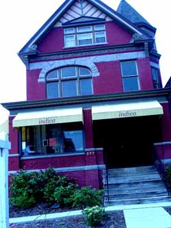

Mom eats lunch at indica
A recent review of local Indian restaurants in the Pittsburgh Post Gazette completely omitted the bistro Poppy and I ate lunch in today, and when I emailed dining critic Elizabeth Downer to ask her why, she replied that she doesn’t like Indica and may have even gone so far as to say that the place gives her hives. Or some kind of unpleasant physical reaction.

Be that as it may, we like it, and think they put on a fine luncheon buffet, albeit at $8.99/person perhaps a little pricey for lunch at an Indian restaurant, but the setting is handsome, in a restored Victorian house with beautiful woodwork and floors. So many Indian restaurants seem to be dank, dark, little hovels. The food is also a bit better than your run of the mill Indian buffet, fresher, and with more variety. They seem to feature different dishes from day to day; today I ate tandoori chicken along with some kind of spicy lentils and green beans stewed with garlic, with rice pilaf on the side, admittedly not original, but done well. The naan is warm with lots of charred bits, which I like. My only complaint today is that there was no chutney or lime pickle on the buffet table; got to have the condiments!
Comments
I just happened to drive by Indica yesterday and thought “what a nice looking place”! I love the paint job(for a restaurant/business)and can’t for the life of me remember if this bldg used to be a business or personal residence. Regardless….I appreciated your review and have it on my “To Go” for lunch list.
Hmmm…never tried it but now I will! On a somewhat related note, I really dislike the changes the P-G has made to the food pages. Elizabeth Downer’s restaurant reviews are “eh” (Mackenzie Carpenter did a better job when she was filling in, IMO), the new food editor, Amy Mc. S. seems to have mandated an unending series of boring articles, many of which seem to be focused on introducing us dumb yinzers to the cuisines of the world (wow, what’s a paella?), and all the sparkle and humor that Suzanne Martison brought to the (then) award-winning section is a distant memory. Maybe it’s just me…am I getting old and crotchety? :o)
I do miss Suzanne Martinson with all her farm-girl lore and her clear love of cooking and eating.
OTOH, I read the article in today’s section about the Thermomix with interest. Ever since Lobstersquad described using one to make onion jam I’ve thought these things sounded great and wanted to learn more about them. The price will have to come down quite a bit before they will become a feasible purchase for the average cook, however!
I am a bit obsessed with the Thermomix, and I’ve been hearing little things about it for a year or so. Cook’s Illustrated endorsed it in their last issue, saying that it did a good job at everything, and that it was perfect for small apartments without room for tons of appliances. Hmm, ideas for my birthday…
Ideas for your birthday—the darn thing costs over $600!
I haven’t been to Indica, but I agree with Marcy about the P-G food section. There was a time when I really looked forward to reading it. I find it boring and cheerless- condescending, yet unsophisicated. What’s the problem? Feels to me like the writers are putting in time and don’t much care?
I can’t remember the last time I got excited about something I read there.
Add a comment